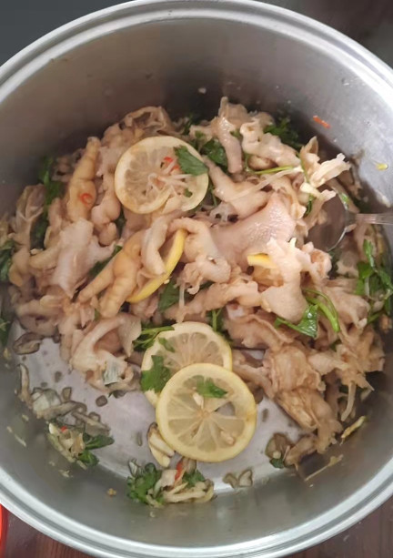

无骨鸡爪的做法
 图片里的颜色比较浅，家里人爱吃酱油少的
这是一道做法简单但消耗体力和耐力的无骨鸡爪，酸辣开胃，Q 弹爽口，第一次做的话总耗时 8 个小时 15 分钟。
预估烹饪难度：★★★★★
必备原料和工具
- 鸡爪
- 姜
- 料酒
- 大葱
- 大蒜
- 小米辣
- 洋葱
- 生抽
- 蚝油
- 黑醋（推荐陈醋）
- 白糖
- 盐
- 花椒油
- 香菜
- 柠檬
计算
一份正好够 2-3 个人吃。
- 鸡爪 1kg
- 姜 4 片
- 料酒 65g
- 大葱 3 段（5cm 一段）
- 大蒜 10 瓣
- 小米辣 4 个少辣，6 个中辣，12 个大辣（推荐大辣）
- 洋葱 （半个）
- 生抽 75g = 15g * 5
- 蚝油 30g = 15g * 2
- 黑醋（推荐陈醋） 50g
- 白糖 10g
- 盐 3g
- 花椒油 10ml
- 香菜 3 颗
- 柠檬 2 颗（以 1 颗为单位来调整酸度）
操作
鸡爪处理
- 用剪刀 / 刀 把鸡爪上的指甲的部分全部剪掉 包括指甲下面的肉和骨头，让它一点指甲都不剩
- 用水把他们洗干净，放一边
- 把
鸡爪放入大锅中，准备去腥味 大葱，料酒，姜全放进去- 加水没过
鸡爪 - 大火煮开 中途可以把浮末捞起来
- 水开100度，沸腾后等 10 分钟
- 关火，捞出来，把水沥干，洗干净，放入盆里
去骨
这一步可以省略，此步骤大约花费 2 小时
- 放入冰箱，冷冻层 20 分钟
- 把全部放入不是冷冻层的冰箱，然后分批10个一批拿出来去骨
- 从手指（鸡爪的）最前端开始，每只手指都要用刀划开划到它的手背部分
- 再从手背部用刀分划开至整个手臂
- 把每只手指关节处都掰一掰按手指出声音时那种
- 按着它的手指最前端，往里推，每只手指都一样，先推到中间手掌手背部分
- 每只手指皮脱离后，从手掌开始往手臂部分推直到整个脱下来了
- 放入碗中，备用
调配腌料
小米辣切均匀小颗大蒜，洋葱，香菜切碎柠檬对半切开，把柠檬汁挤入鸡爪的容器里- 把
全部调料倒入装鸡爪的容器，小米辣，大蒜，洋葱和香菜也放进去 - 抓拌均匀
- 放入冰箱一个晚上（6 个小时）
- 调配好后全部放入准备好的鸡爪
附加内容
- 操作时，需要注意观察沸腾的水位线，如发现低于 3/4 的食材应加热水至没过食材。
- 鸡爪去骨教程 ：bili_89324373958
如果您遵循本指南的制作流程而发现有问题或可以改进的流程，请提出 Issue 或 Pull request 。